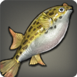

|
|
|
Grass Carp |
| 130 Rivers |  |
| A freshwater fish native to the Hundred Throes, where it conceals itself in the churning waters of the myriad cataracts. |
As the name implies, grass carp dine solely on water grasses, shunning the carnivorous eating habits of their cousins for a healthier diet. Unfortunately, this diet gives the fish a very bitter flavor, making it unsuitable for consumption. |
|
Pipira Pira |
| 145 Rivers M (2) |  |
A deadly freshwater fish which will tear away flesh with its razor-sharp teeth. Crossing the Whilom River barefoot is not recommended.
[Suitable for display in aquariums tier 2 and higher.] |
An exceptionally ravenous variety of pipira, the pipira pira have been known to bite clean through the ankles of chocobo herds fording rivers containing schools of the deadly wavekin. |
|
Dravanian Squeaker |
133 Lakes  | |
| A peculiar breed of freshwater catfish that swims upside down. It was first discovered in Weston Waters. |
A unique variety of brightly mottled catfish which swims upside down in order to confuse both prey and predators. |
|
Kissing Fish |
| 133 Rivers M (2) | |
An adorable freshwater fish native to the waters of Eil Tohm.
[Suitable for display in aquariums tier 2 and higher.] |
To the layman's eye, the repeated pressing of perpetually puckered mouths by two of these wavekin appears to be an act of affection, when in fact, it is heated territorial dispute. |
|
Mitre Slug |
| 133 Floating Islands | |
| A flying slug native to the Sea of Clouds. |
Recently discovered and named by knights of House Haillenarte dispatched to explore the islets floating above Ishgard, the shells of these snail-like creatures bear a close resemblance with the holy mitre worn by the archbishop. |
|
Lava Crab |
| 133 Magma | |
| This hard-shelled crustacean is one of few creatures on Eorzea which withstand the heat of molten lava. |
Only recently discovered, natural scholars are still at a loss as to how any creature, this crab included, can survive in scalding liquid rock. Tests conducted by the Thaumaturges' Guild have found that the hard carapace can withstand heat up to that generated by Fire IV. |
|
Storm Core |
| 133 Floating Islands | |
| A spherical creature found in the upper atmospheric region of the Sea of Clouds. |
Similar to glacier cores, but with an elemental aspect of lightning instead of ice, the Vanu Vanu have, for generations, captured storm cores and placed them in baskets to serve as lighting for their homes. |
|
Scholar Sculpin |
| 133 Lakes | |
| A freshwater fish named after Thaliak, the Scholar. |
Before abandoning their city�state, the Sharlayans would utilize this sculpin's natural tendency to swim back and forth between two unchanging locations in search of prey to deliver messages up and down the Thaliak River. |
|
Gigant Grouper |
| 136 Lakes | |
| A massive freshwater fish who lurks beneath the thick sheet of ice covering Ashpool. |
A highly intelligent wavekin with an enormous appetite, the gigant grouper will repeatedly butt its head against the underside of a frozen lake, weakening the ice so that when a large creature such as a polar bear lumbers by, it will fall through, providing a hearty meal. |
|
Vanuhead |
| 136 Rivers L (4) | |
A freshwater fish inhabiting the Eddies─an isolated lake found atop one of Abalathia's floating islets.
[Suitable for display in aquariums tier 3 and higher.] |
The first explorers of the floating Abalathian island mistook this fish with a massive lump upon its forehead to be a diving Vanu Vanu, hence the moniker. Interestingly enough, the Vanu Vanu call this fish “duku'moii,” which means “swimming bottom dweller.” |
|
Marble Oscar |
| 136 Lakes M (2) | |
A freshwater fish which prefers the heated pools of the Smoldering Wastes to the cooler waters of surrounding rivers.
[Suitable for display in aquariums tier 2 and higher.] |
Marble oscars will often gather in water that has been clouded by spilled blood, leading the Gnath to believe the wavekin a loyal servant of the Lord of the Hive, Ravana. |
|
Lungfish |
| 180 Lakes | |
| A highly evolved air-breathing wavekin found in the muddy biome near the Pappus Tree. |
Unlike gigantoads, newts, or nankas which, by exhibiting properties of both wave- and scalekin, are able to survive in and out of water, the lung fish is a rare example of a wavekin that, despite being void of scalekin properties, can still survive for extended periods on dry land─sometimes for several summers. |
|
Tigerfish |
| 136 Lakes XL (7) | |
A striped freshwater fish native to the Quickspill Delta.
[Suitable for display in aquariums tier 4 and higher.] |
This violent freshwater fish was dubbed the tigerfish by a group of Auri travelers who claim the striped pattern on the wavekin's back resembles that of a Far Eastern beast known as a tiger. |
|
Sky Faerie |
| 130 Floating Islands | |
| A tiny transparent mollusk often seen in the skies near the Blue Window. |
While many an Ishgardian lay has been sung about the beauty of these ephemeral creatures, sky faeries are detested by the Vanu tribes of Abalathia who find them to be grotesque and misshapen monstrosities. |
|
Granite Crab |
| 136 Magma | |
| A thick-shelled crab capable of surviving the extreme temperatures of exposed lava pools. |
Granite crabs will not eat raw meat and have been witnessed drawing land-dwelling prey into magma before devouring it. |
|
Aithon's Colt |
| 136 Magma | |
| A graceful glass-like creature that glides with ease through the lava coursing through Anyx Old within the belly of Sohm Al. |
Believed by some to be the son of the legendary steed Aithon, this lava-dwelling creature's body is shielded by a layer of thick glass which aids its movement in the magma. |
|
Shipworm |
| 136 Rivers | |
| A worm-like mollusk that lives in the fallen trees and ancient shipwrecks that litter the bottom of the Thaliak River. |
A shell-less bivalve mollusk notorious for boring into ship hulls. Despite the use of protective measures such as ironwood bug shoes or metal plating, the vermiform creatures will eventually find a way into any ship, slowly consuming it from the inside. |
|
Hedgemole Cricket |
| 130 Rivers | |
| An amphibious vilekin found swarming about the Quickspill Delta. |
This tiny vilekin has the capacity to live on both land and in water, using its powerful barbed forelegs to both burrow and to swim. Its reproductive capacity is immense; however, since both fish and birds feed on the cricket, its population remains fairly controlled. |
|
Mogpom |
| 136 Lakes |  |
| An algal sphere found collecting in the lone pool on the floating islet of Greensward. |
A distant cousin to the lamp marimo, moogles will avoid mogpoms at all costs, believing them to be the discarded poms of their fallen comrades. |
|
Magma Tree |
| 136 Magma | |
| A colony of tiny crystal-encased creatures found growing in the cavern of Mourn. |
While similar in appearance to coral, magma trees are actually giant colonies of tiny creatures encased in heat-resistant crystal which feed upon the essence of ore melted in the magma within which they reside. |
|
Cloud Rider |
| 136 Floating Islands | |
| A flying fish native to the Churning Mists. |
Unlike their lower-altitude cousins the cloud cutters, cloud riders will not fly in straight trajectories, but rather skip across the tops of clouds, tapping into the clouds' wind-aspected aether to propel themselves through the skies. |
|
Dravanian Bass |
| 139 Rivers | |
| A large freshwater fish native to the Whilom River. |
Fishers who are brave enough to venture into the largely untouched areas west of Ishgard are rewarded with specimens like the Dravanian bass which are known to almost always put up a good fight. |
 |
Coerthan Puffer |
| 136 Lakes | |
| A rare freshwater puffer found only in northern Eorzea. |
An extremely rare form of freshwater puffer found only in the cold waters beyond the Coerthas lowlands. Ishgardian nobles believe that the fish bring fortune, and many have elaborate tanks built in their manors so that they may gaze upon the wavekin as they count their gil. |
|
Snowcaller |
| 136 Lakes | |
| A freshwater fish native to the gelid waters of Banepool. |
The snowcaller will wait in the mud at the bottom of lakes until the water temperature drops, numbing the movement of those fish who are less tolerant to the cold. It is then that the snowcaller will rise from its warm bed and attack. |
|
Dragonhead |
| 136 Rivers M (2) | |
A freshwater fish native to the Iron Feast. The skull on its head does not appear to be that of a dragon, but rather of a dragonfly.
[Suitable for display in aquariums tier 2 and higher.] |
The dragonhead is one of many varieties of Eorzean fish that wear the skulls of small animals fallen into the water. The skulls are thought to not only frighten away predators, but also protect the head from potentially fatal bites. |
|